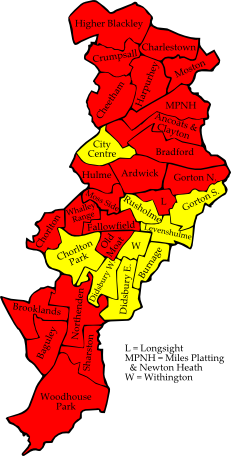
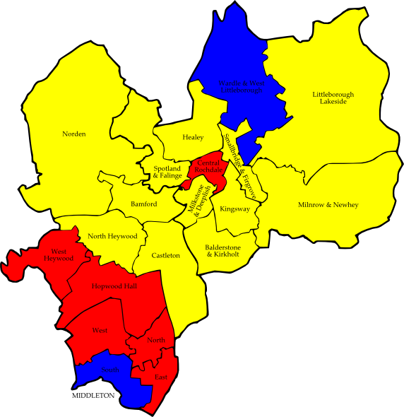
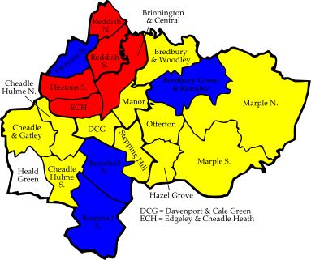
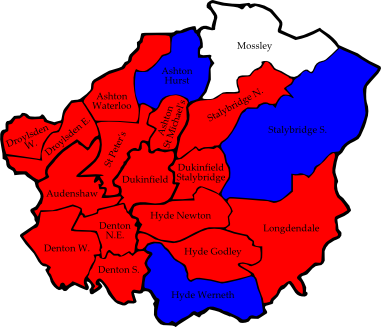
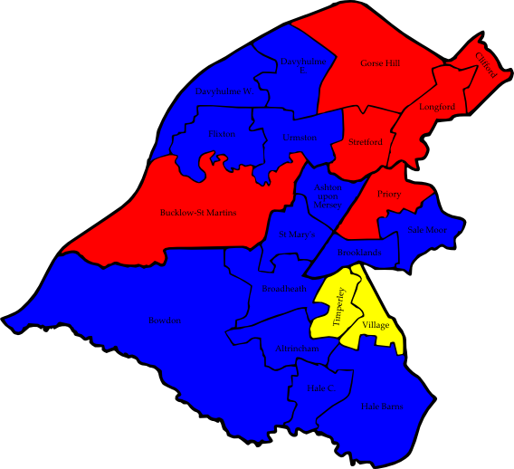

Chapter 3 Greater Manchester
3.1 Bolton
Astley Bridge
|
John Walsh | C | 2,424 |
| Muhammad Rafiq | Lab | 686 |
| Jaleh Salari | LD | 351 |
| Howard Broadbent | Soc Lab | 250 |
Bradshaw
|
Paul Brierley | C | 2,319 |
| Janice Sutton | Lab | 751 |
| Stephen Howarth | LD | 539 |
Breightmet
|
Lynda Byrne | Lab | 1,435 |
| Richard Elliott | C | 1,358 |
| Edward Hill | LD | 351 |
Bromley Cross
|
David Greenhalgh | C | 2,725 |
| Anthony Muscat Terribile | Lab | 712 |
| Clive Atty | LD | 462 |
| Elizabeth Spencer | Grn | 292 |
Crompton
|
Sufrana Bashir-Ismail | Lab | 1,932 |
| Valibhai Patel | LD | 1,132 |
| Donald Fairclough | C | 941 |
| Anthony Backhouse | Veritas | 190 |
| Lynne Lowe | Soc Lab | 129 |
Farnworth
|
Noel Spencer | Lab | 1,296 |
| Peter Taylor | C | 509 |
| David Connor | LD | 394 |
Great Lever
|
Mohammed Ayub | Lab | 1,889 |
| Christine Wild | C | 669 |
| Gulamali Jiva | LD | 335 |
| Alan Johnson | Grn | 327 |
Halliwell
|
Akhtar Zaman | Lab | 2,289 |
| Jamie Douglas | C | 605 |
| Nathan Biney | LD | 404 |
Harper Green
|
Laurence Williamson | Lab | 1,194 |
| Robert Tyler | C | 768 |
| Geoffrey Willis | LD | 454 |
Heaton and Lostock
|
Colin Shaw | C | 3,329 |
| John Gillatt | Lab | 828 |
| Andrew Snowden | LD | 668 |
Horwich and Blackrod
|
Michael Hollick | C | 1,151 |
| Isabel Seddon | Lab | 1,105 |
| John Cronnolley | LD | 1,025 |
Horwich North East
|
Stephen Rock | LD | 1,449 |
| Stephen Wallen | C | 1,169 |
| Madeline Murray | Lab | 1,004 |
Hulton
|
Andrew Morgan | C | 1,741 |
| Romanna Kowalczuk | Lab | 1,051 |
| Linden Greensitt | LD | 463 |
Kearsley
|
Derek Burrows | Lab | 1,158 |
| William Collison | LD | 1,079 |
| Diane Bamber | C | 487 |
Little Lever and Darcy Lever
|
Sean Hornby | Lab | 1,573 |
| David Broadie | C | 1,427 |
| Alwynne Cartmell | Grn | 345 |
| Wendy Connor | LD | 298 |
| William Jones | Veritas | 98 |
Rumworth
|
Ismail Ibrahim | Lab | 2,028 |
| John Heyes | C | 932 |
Smithills
|
Richard Silvester | LD | 1,621 |
| Dennis Bray | C | 1,345 |
| Joseph Hayes | Lab | 861 |
Tonge with The Haulgh
|
Nicholas Peel | Lab | 1,598 |
| Mudasir Dean | C | 874 |
| Rosalind Harasiwka | LD | 252 |
| James Tomkinson | Grn | 227 |
Westhoughton North & Chew Moor
|
John Higson | C | 1,486 |
| David Chadwick | Lab | 1,146 |
| James Gilfillan | LD | 515 |
| Eric Hyland | Grn | 304 |
Westhoughton South
|
Julia Silvester | LD | 997 |
| Barbara Ramsden | Lab | 916 |
| Michael Baker | C | 837 |
Consolidated Results — Bolton
|
Conservative | 27,096 | 40.1% | 7 councillors |
| Labour | 25,452 | 37.7% | 10 councillors |
| Liberal Democrat | 12,789 | 18.9% | 3 councillors |
| Green Party | 1,495 | 2.2% | |
| Socialist Labour Party | 379 | 0.6% | |
| Veritas | 288 | 0.4% | |
Besses
|
Kenneth Audin | Lab | 1,085 |
| Jonathan Grosskopf | C | 597 |
| Mary D'Albert | LD | 396 |
| Lucy Cohn | Ind | 208 |
Church
|
Robert Bibby | C | 2,048 |
| Benjamin Shatliff | Lab | 847 |
| Paul Jenkins | LD | 649 |
East
|
Trevor Holt | Lab | 1,259 |
| Azmat Husain | C | 702 |
| Shafqat Mahmood | LD | 421 |
Elton
|
Michael Hankey | C | 1,533 |
| Stella Smith | Lab | 1,083 |
| Ewan Arthur | LD | 597 |
Holyrood
|
Timothy Pickstone | LD | 1,576 |
| Marilyn Vincent | C | 757 |
| Suzanne Johnston | Lab | 699 |
Moorside
|
Peter Ashworth | C | 1,129 |
| Warren Flood | Lab | 995 |
| Victor Hagan | LD | 686 |
North Manor
|
James Taylor | C | 2,350 |
| Robert Sloss | LD | 741 |
| Francis Shatliff | Lab | 706 |
Pilkington Park
|
Bernard Vincent | C | 1,760 |
| Alan Quinn | Lab | 840 |
| Mohammed Mustafa | LD | 251 |
Radcliffe East
|
Catherine Berry | C | 1,029 |
| Stephen Perkins | Lab | 963 |
| Michael Halsall | LD | 460 |
| Paul Clarke | Ind | 199 |
Radcliffe North
|
Sharon Briggs | Lab | 1,431 |
| Stuart Penketh | C | 1,416 |
| Maureen Davison | LD | 367 |
| Mathew Randall | Ind | 180 |
Radcliffe West
|
Wayne Campbell | Lab | 1,231 |
| Alan Bigg | C | 709 |
| Deborah Fallon | Ind | 301 |
Ramsbottom
|
Diana Ashworth | C | 1,759 |
| Valerie Robinson | Lab | 939 |
| Fiona Davison | LD | 427 |
Redvales
|
Farook Chaudhry | Lab | 1,178 |
| Khalid Hussain | C | 1,127 |
| Bill Brison | LD | 840 |
St Mary's
|
Donal O'Hanlon | LD | 1,333 |
| Steven Treadgold | Lab | 896 |
| Denise Ormrod | C | 727 |
| Andrew Duff | Ind | 217 |
Sedgley
|
Andrew Garner | LD | 1,478 |
| Peter Timperley | Lab | 1,224 |
| Shneur Odze | C | 1,075 |
Tottington
|
Iain Gartside | C | 1,590 |
| Jane Lewis | Lab | 711 |
| David Foss | LD | 478 |
Unsworth
|
Beverly Sullivan | C | 1,311 |
| Joan Grimshaw | Lab | 1,250 |
| Geoffrey Young | LD | 372 |
| Paul Gerrard | Ind | 154 |
Consolidated Results — Bury
|
Conservative | 21,619 | 42.2% | 9 councillors |
| Labour | 17,337 | 33.8% | 5 councillors |
| Liberal Democrat | 11,072 | 21.6% | 3 councillors |
| Independents | 1,259 | 2.5% | |
3.3 Manchester
Ancoats and Clayton
|
Jim Battle | Lab | 1,463 |
| Daniel Valentine | LD | 1,235 |
| Christine Birchenough | C | 136 |
| Richard Keatley | Grn | 126 |
| John Hulse | Ind | 71 |
Ardwick
|
Mavis Smitheman | Lab | 1,248 |
| Mohammad Panwar | LD | 405 |
| Christopher Charlton | Grn | 216 |
| Tadeusz Sochacki | C | 163 |
Baguley
|
Eddie McCulley | Lab | 1,205 |
| Joyce Kaye | C | 498 |
| Leslie Ardron | LD | 323 |
| Lynne Richmond | Grn | 220 |
| Lynn Worthington | Soc Alt | 214 |
Bradford
|
John Longsden | Lab | 1,525 |
| Bob Brettle | LD | 316 |
| Karen Abbad | C | 188 |
| Christopher Waldon | Grn | 156 |
Brooklands
|
Sue Murphy | Lab | 1,378 |
| Ralph Ellerton | C | 953 |
| John Ankers | LD | 787 |
| Tamisin MacCarthy-Morrogh | Grn | 149 |
Burnage
|
Rodney Isherwood | LD | 1,460 |
| Frank Duffy | Lab | 1,169 |
| Dorothy Keller | C | 252 |
| Elindsay James | Grn | 192 |
Charlestown
|
Eric Hobin | Lab | 1,435 |
| Vivienne Clarke | C | 388 |
| Ann Rodgers | LD | 348 |
| Catherine Ritchie | UKIP | 312 |
| Helen Dolan | Grn | 159 |
Cheetham
|
Naeem ul Hassam | Lab | 1,707 |
| Qassim Afzal | LD | 1,608 |
| Jacqueline Smith | Grn | 235 |
| Kim Glasspole | C | 191 |
Chorlton
|
Val Stevens | Lab | 1,828 |
| Charles Glover | LD | 1,713 |
| Brian Candeland | Grn | 609 |
| Amar Ahmed | C | 198 |
Chorlton Park
|
Norman Lewis | LD | 1,724 |
| Yogesh Virmani | Lab | 797 |
| Kathryn Brownbridge | Grn | 399 |
| Rodney Keller | C | 229 |
City Centre
|
Elaine Boyes | LD | 531 |
| Chris Paul | Lab | 374 |
| James Berry | C | 311 |
| Birgit Vollm | Grn | 181 |
Crumpsall
|
Jon-Leigh Pritchard | Lab | 1,667 |
| Sham Akhtar | LD | 738 |
| Adrian Glasspole | C | 476 |
| Ernest Willescroft | UKIP | 259 |
| Justine Hall | Grn | 223 |
Didsbury East
|
Anthony Parkinson | LD | 1,809 |
| Geoffrey Bridson | Lab | 1,369 |
| Richard Gee | Grn | 459 |
| Peter Schofield | C | 359 |
Didsbury West
|
Richard Clayton | LD | 1,189 |
| David Ellison | Lab | 692 |
| Peter Hilton | C | 485 |
| George Czernuszka | Grn | 329 |
| Robert Gutfreund-Walmsley | UKIP | 76 |
Fallowfield
|
Mike Amesbury | Lab | 1,357 |
| John-Paul Wilkins | LD | 1,086 |
| Cedric Beniston | C | 171 |
| Susan Somerville | Grn | 168 |
| Joseph Finnon | BNP | 140 |
Gorton North
|
Nilofar Siddiqi | Lab | 1,244 |
| Bernadette Newing | LD | 1,132 |
| Allan Grafton | Ind | 465 |
| Patricia Ainscough | C | 144 |
| Rachel Wilson | Grn | 78 |
| David Jones | Ind | 72 |
Gorton South
|
John Bridges | LD | 1,375 |
| Julie Reid | Lab | 1,031 |
| David Mottram | Grn | 246 |
| Raymond Kenyon | C | 226 |
Harpurhey
|
Paul Fairweather | Lab | 1,420 |
| Gareth Aubrey | LD | 320 |
| Roger Bullock | UKIP | 312 |
| Ian Beswick | C | 302 |
| Darren Flynn | Grn | 215 |
Higher Blackley
|
Anna Trotman | Lab | 1,477 |
| Terence Shannon | C | 506 |
| Barbara Argyropoulos | LD | 383 |
| Michael Shaw | Grn | 226 |
Hulme
|
Nigel Murphy | Lab | 816 |
| Oliver West | LD | 576 |
| Steven Durrant | Grn | 539 |
| Paul Kierman | C | 96 |
| Christine Boscott-Shermerdine | Ind | 53 |
| Cae Os | Ind | 43 |
| Peter Reeve | UKIP | 20 |
| Charles Lyn-Lloyd | Ind | 11 |
Levenshulme
|
Alexander Cowan | LD | 1,402 |
| Dermot Zafar | Lab | 779 |
| Peter Thompson | Grn | 399 |
| William Moore | C | 217 |
Longsight
|
Maryam Khan | Lab | 1,687 |
| Mohammed Sajjad | LD | 774 |
| Hassan Ukairo | Grn | 444 |
| Zahir Ali | C | 182 |
Miles Platting and Newton Heath
|
John Flanagan | Lab | 1,286 |
| Richard Wilson | LD | 791 |
| Derek Adams | BNP | 501 |
| Lisa Duffy | UKIP | 149 |
| Brian Birchenough | C | 134 |
| Anthony Quinn | Grn | 96 |
Moss Side
|
Roy Walters | Lab | 1,734 |
| Mohammad Butt | LD | 509 |
| Robin Goater | Grn | 235 |
| Anthony Weekes | Ind | 129 |
| Raymond Wattenbach | C | 116 |
Moston
|
Bill Risby | Lab | 1,774 |
| Anthony Pinder | C | 755 |
| Timothy Hartley | LD | 506 |
| Rose Cameron | Grn | 303 |
Northenden
|
Richard Cowell | Lab | 1,431 |
| Martin Eakins | LD | 1,092 |
| Nathan Cruddas | C | 391 |
| Lance Crookes | Grn | 136 |
Old Moat
|
Brian Harrison | Lab | 1,567 |
| Tina Maache | LD | 773 |
| Robin-Ella Davies | Grn | 317 |
| Daniel Valentine | C | 221 |
Rusholme
|
Lynne Williams | LD | 1,157 |
| John Byrne | Lab | 804 |
| Nahella Ashraf | Respect | 615 |
| Penelope Collins | Grn | 188 |
| Barbara Goodall | C | 135 |
Sharston
|
Hugh Barrett | Lab | 1,248 |
| Agnes Carroll | C | 402 |
| William Fisher | LD | 355 |
| Karen Duffy | Grn | 264 |
Whalley Range
|
Mary Watson | Lab | 1,637 |
| Joy Winder | LD | 1,158 |
| Mary Candeland | Grn | 466 |
| Matthew Cox | C | 289 |
Withington
|
Simon Wheale | LD | 1,064 |
| Delores Long | Lab | 613 |
| Sarah Stuart | Grn | 340 |
| Andrew Perfect | C | 207 |
Woodhouse Park
|
Edward Newman | Lab | 1,277 |
| Ruby Raynor | C | 328 |
| Joseph Podbylski | LD | 290 |
| Peter Somerville | Grn | 180 |
Consolidated Results — Manchester
|
Labour | 41,039 | 44.8% | 23 councillors |
| Liberal Democrat | 28,929 | 31.6% | 9 councillors |
| Conservative | 9,649 | 10.5% | |
| Green Party | 8,493 | 9.3% | |
| UK Independence Party | 1,118 | 1.2% | |
| Independents | 844 | 0.9% | |
| British National Party | 641 | 0.7% | |
| Respect — The Unity Coalition | 615 | 0.7% | |
| Socialist Alternative | 214 | 0.2% | |

| Figure 3.3: Manchester 2006 |
3.4 Oldham
Alexandra
|
Asaf Ali | Lab | 1,061 |
| Martin Dinoff | LD | 716 |
| Paul Stephenson | C | 279 |
| Chris Wright | Ind | 193 |
| Kay Roney | Grn | 168 |
Chadderton Central
|
Colin McLaren | Lab | 915 |
| Gavin Smith | C | 759 |
| Keith Pendlebury | LD | 370 |
| Philip Stevens | Grn | 327 |
Chadderton North
|
Philip Rogers | C | 1,495 |
| Julie Kirkham | Lab | 1,127 |
| Keith Taylor | LD | 311 |
| Joan Spencer | Grn | 172 |
Chadderton South
|
Elizabeth Wrigglesworth | Lab | 1,054 |
| John Berry | C | 709 |
| Susannah Stevens | Grn | 374 |
| Philip Renold | LD | 251 |
Coldhurst
|
Muhammad Uddin | LD | 1,984 |
| Abu Choudhury | C | 1,100 |
| Joseph Fitzpatrick | Lab | 906 |
Crompton
|
Philomena Dillon | LD | 1,761 |
| David Dunning | C | 845 |
| Ann Buscema | Lab | 394 |
| Fiona Southall | Grn | 258 |
Failsworth East
|
Peter Dean | Lab | 1,227 |
| Paul Martin | C | 806 |
| John Parker | Grn | 356 |
| Lesley Schofield | LD | 161 |
Failsworth West
|
Aileen Bell | Lab | 1,165 |
| Warren Bates | Grn | 531 |
| Ian Barker | C | 493 |
| Derek Clayton | LD | 171 |
Hollinwood
|
Stephen Barrow | LD | 1,009 |
| Ian Thompson | Lab | 906 |
| David McDonald | C | 352 |
| David Roney | Grn | 202 |
Medlock Vale
|
Jean Jones | Lab | 1,053 |
| Mohammed Aslam | LD | 1,037 |
| Martin Brierley | BNP | 557 |
| David Shaw | Grn | 203 |
| Muhammad Badar | C | 200 |
Royton North
|
Olwen Chadderton | Lab | 1,290 |
| Joseph Farquhar | C | 853 |
| Anita Corbett | BNP | 848 |
| Susan Barratt | LD | 397 |
Royton South
|
David Shaw | LD | 1,086 |
| Jill Read | Lab | 900 |
| Angela Shearer | BNP | 688 |
| Allan Fish | C | 600 |
Saddleworth North
|
Alan Roughley | LD | 1,892 |
| Barbara Jackson | C | 840 |
| Alastair McGregor | Lab | 450 |
| Ben McCarthy | Grn | 215 |
Saddleworth South
|
John McCann | LD | 2,034 |
| John Hudson | C | 1,300 |
| Edward Moores | Lab | 272 |
| David Godwin | Grn | 254 |
Saddleworth West and Lees
|
Tom Beeley | LD | 1,364 |
| George Burston | C | 790 |
| Paul Fryer | Lab | 685 |
| Oliver Thompson | Grn | 242 |
| Robert Allsopp | Ind | 129 |
St James'
|
Roger Hindle | LD | 956 |
| Adrian Alexander | Lab | 603 |
| Michael Treacy | BNP | 526 |
| Terence Hopkinson | C | 266 |
| Paul Holmes | Grn | 225 |
St Mary's
|
Ali Salamat | Ind | 1,715 |
| Israk Miah | LD | 1,043 |
| Brian Ames | Lab | 769 |
| David Atherton | C | 310 |
| Ajawat Hussain | Ind | 42 |
| Asif Hussain | Ind | 41 |
Shaw
|
Rod Blyth | LD | 1,166 |
| Anthony Bennett | Ind | 529 |
| Alwyn Stott | BNP | 455 |
| Dilys Fletcher | Lab | 388 |
| Kevin Howard | C | 277 |
| Tara Ashworth | Grn | 36 |
Waterhead
|
Lynne Thompson | LD | 1,353 |
| Jennifer Harrison | Lab | 870 |
| John Caddick | C | 317 |
| Stuart Allsopp | Ind | 233 |
Werneth
|
Shoab Akhtar | Lab | 2,123 |
| Fazel Rahim | LD | 1,876 |
| Kenneth Heeks | C | 365 |
Consolidated Results — Oldham
|
Liberal Democrat | 20,938 | 34.0% | 10 councillors |
| Labour | 18,158 | 29.5% | 8 councillors |
| Conservative | 12,956 | 21.0% | 1 councillor |
| Green Party | 3,563 | 5.8% | |
| British National Party | 3,075 | 5.0% | |
| Independents | 2,882 | 4.7% | 1 councillor |
3.5 Rochdale
Balderstone and Kirkholt
|
Dale Mulgrew | LD | 957 |
| Steven Burke | Lab | 660 |
| Linda Butler | C | 439 |
Bamford
|
William Hobhouse | LD | 1,593 |
| Sylvia Diggle | C | 1,193 |
| Valerie Godson | Lab | 359 |
Castleton
|
Peter Davison | LD | 1,399 |
| Colin Thompson | Lab | 646 |
| Ronald Crossley | C | 384 |
Central Rochdale
|
Ibrar Khan | Lab | 1,763 |
| Shah Wazir | LD | 1,472 |
| Roger Howarth | C | 354 |
East Middleton
|
David Murphy | Lab | 900 |
| Mark Brady | LD | 845 |
| Susan Pawson | C | 438 |
Healey
|
Alan Taylor | LD | 1,250 |
| Andrew Neilson | C | 738 |
| Donald Mooney | BNP | 660 |
| Abdul Chowdry | Lab | 434 |
| Samir Chatterjee | Grn | 122 |
Hopwood Hall
|
Carol Wardle | Lab | 1,267 |
| Peter Burt | C | 761 |
| Malcolm Heard | LD | 355 |
Kingsway
|
Mark Birkett | LD | 1,218 |
| Tom Stott | Lab | 1,158 |
| Philip Grantham | C | 314 |
Littleborough Lakeside
|
Pauline Maguire | LD | 1,293 |
| Frank Mills | C | 785 |
| Derek Snowden | Lab | 339 |
Milkstone and Deeplish
|
Angela Coric | LD | 1,931 |
| Imtiaz Ahmed | Lab | 1,379 |
| Mudassar Razzaq | C | 266 |
Milnrow and Newhey
|
Denis Whittle | LD | 1,298 |
| Michael Butler | C | 591 |
| Geoffrey Coady | Lab | 472 |
Norden
|
Wera Hobhouse | LD | 1,327 |
| Paul Chadwick | C | 1,109 |
| Muhammad Malik | Lab | 263 |
North Heywood
|
Peter Rush | LD | 1,034 |
| Nick Maher | Lab | 748 |
| Norman Warwick | C | 285 |
North Middleton
|
Ian Robertson | Lab | 811 |
| Neil Lever | LD | 564 |
| David Harris | C | 475 |
Smallbridge and Firgrove
|
Christine Akram | LD | 817 |
| Lorraine Butterworth | Lab | 769 |
| Keith Taylor | C | 417 |
South Middleton
|
Michael Holly | C | 1,261 |
| Peter Williams | Lab | 1,242 |
| Paul Guisborne-Hilton | LD | 439 |
Spotland and Falinge
|
Peter Clegg | LD | 1,713 |
| James Brown | Lab | 592 |
| Steven Scholes | C | 391 |
Wardle and West Littleborough
|
Robert Clegg | C | 1,652 |
| Hilary Rodgers | LD | 477 |
| Pauline Mann | Lab | 299 |
West Heywood
|
Alan McCarthy | Lab | 954 |
| Doreen Brophy-Lee | LD | 585 |
| Kathryn Burt | C | 484 |
West Middleton
|
Robin Parker | Lab | 988 |
| Barbara Guisbourne-Hilton | LD | 498 |
| David Pawson | C | 388 |
Consolidated Results — Rochdale
|
Liberal Democrat | 21,065 | 41.6% | 12 councillors |
| Labour | 16,043 | 31.7% | 6 councillors |
| Conservative | 12,725 | 25.1% | 2 councillors |
| British National Party | 660 | 1.3% | |
| Green Party | 122 | 0.2% | |

| Figure 3.5: Rochdale 2006 |
3.6 Salford
Barton
|
David Jolley | Lab | 971 |
| Roy Laurence | LD | 511 |
| Gary Green | C | 416 |
| Alan Valentine | Ind | 244 |
Boothstown and Ellenbrook
|
Christine Gray | C | 1,354 |
| Philip Cusack | Lab | 615 |
| Ronald Benjamin | LD | 300 |
| Roy Battersby | Grn | 224 |
Broughton
|
John Merry | Lab | 1,077 |
| Susan Carson | LD | 557 |
| Hilary Brunyee | C | 278 |
Cadishead
|
Keith Mann | Lab | 1,118 |
| Elizabeth Hill | C | 982 |
Claremont
|
Margaret Ferrer | LD | 1,162 |
| Peter Wheeler | Lab | 707 |
| Edward O'Sullivan | BNP | 424 |
| Catherine Edwards | C | 331 |
Eccles
|
Jane Murphy | Lab | 1,038 |
| Ann Davies | C | 975 |
| Christine Lomax | LD | 632 |
Irlam
|
Roger Lightup | Lab | 905 |
| Joyce Collins | C | 585 |
| Mariska Jones | LD | 334 |
Irwell Riverside (2)
|
James Hulmes | Lab | 716 |
| Stephen Coen | Lab | 675 |
| Kenneth McKelvey | LD | 611 |
| Edith Moores | C | 284 |
| Jack Stockford | C | 173 |
Kersal
|
Ann-Marie Humphreys | Lab | 1,077 |
| Harold Kershner | LD | 642 |
| Colin Moore | C | 563 |
Langworthy
|
John Warmisham | Lab | 890 |
| Lynn Drake | LD | 758 |
| Sydney Cooper | C | 253 |
Little Hulton (2)
|
Eric Burgoyne | Lab | 890 |
| Patricia Ryan | Lab | 862 |
| David Cowpe | LD | 375 |
| Nicolette Turner | C | 341 |
| Thomas Fernley | LD | 296 |
| Elaine West | C | 274 |
Ordsall
|
Alan Clague | Lab | 584 |
| Stephen Plaister | LD | 287 |
| Nicholas Grant | C | 243 |
Pendlebury
|
Bernard Lea | Lab | 1,143 |
| Peter Allcock | C | 643 |
| Christine Corry | LD | 543 |
Swinton North
|
Charles Hinds | Lab | 1,107 |
| Michael Edward | C | 662 |
| Paul Gregory | LD | 596 |
Swinton South
|
Joseph O'Neill | LD | 965 |
| Charles McIntyre | Lab | 842 |
| Christine Allcock | C | 584 |
Walkden North
|
Barbara Miller | Lab | 1,062 |
| Walter Edwards | C | 542 |
| Margita Shevchikova | LD | 319 |
Walkden South
|
Leslie Turner | C | 1,385 |
| Adrian Brocklehurst | Lab | 900 |
| Pauline Ogden | LD | 632 |
Weaste and Seedley
|
John Deas | LD | 1,003 |
| Stephen Race | Lab | 888 |
| Jonathan Thomason | C | 345 |
Winton
|
Margaret Morris | Lab | 994 |
| Philip Ward | LD | 682 |
| Judith Tope | C | 439 |
Worsley
|
Graham Compton | C | 1,980 |
| James Gregory | LD | 649 |
| Warren Coates | Lab | 573 |
Consolidated Results — Salford
|
Labour | 18,097 | 41.4% | 16 councillors |
| Conservative | 13,185 | 30.1% | 3 councillors |
| Liberal Democrat | 11,558 | 26.4% | 3 councillors |
| British National Party | 424 | 1.0% | |
| Independent | 244 | 0.6% | |
| Green Party | 224 | 0.5% | |
3.7 Stockport
Bramhall North
|
M Walsh | C | 2,349 |
| H Foster-Grime | LD | 2,269 |
| K Priestley | Lab | 179 |
| M Crossley | UKIP | 172 |
Bramhall South
|
J Leck | C | 2,606 |
| D Grice | LD | 2,044 |
| D Perry | UKIP | 146 |
| B Dykes | Lab | 142 |
Bredbury and Woodley
|
C Gordon | LD | 1,933 |
| K Gibbons | C | 749 |
| J Humphries | Lab | 482 |
Bredbury Green and Romiley
|
S Lloyd | C | 1,868 |
| B Jones | LD | 1,456 |
| P Bray | Lab | 551 |
Brinnington and Central
|
C MacAlister | Lab | 1,081 |
| P Moss | LD | 732 |
| B Charlesworth | C | 303 |
Cheadle and Gatley
|
B Millard | LD | 2,372 |
| C Davenport | C | 1,943 |
| C Owen | Lab | 469 |
Cheadle Hulme North
|
J Somekh | LD | 1,952 |
| D Cocker | C | 1,084 |
| M Miller | Lab | 356 |
Cheadle Hulme South
|
S Bodsworth | LD | 1,885 |
| M Roscoe | C | 1,668 |
| D Leaver | Grn | 248 |
| B Hendley | Lab | 246 |
Davenport and Cale Green
|
D White | LD | 1,437 |
| S Mealey | Lab | 971 |
| C Holgate | C | 572 |
Edgeley and Cheadle Heath
|
P Harding | Lab | 1,486 |
| C Smith | LD | 548 |
| S Holgate | C | 439 |
| P Behan | Ind | 344 |
| M Cole | Grn | 280 |
Hazel Grove
|
S Corris | LD | 2,281 |
| J Lewis-Booth | C | 1,509 |
| Y Bradley | Lab | 296 |
| D Ryan | Ind | 142 |
Heald Green
|
D Whitehead | Ind | 2,199 |
| D Roberts-Jones | LD | 587 |
| R Stevenson | C | 436 |
| M Junejo | Lab | 227 |
Heatons North
|
A O'Neil | C | 1,922 |
| M Pollard | Lab | 1,031 |
| C Walker | LD | 541 |
| J Cuff | Grn | 401 |
Heatons South
|
T McGee | Lab | 1,488 |
| E Foulkes | C | 1,378 |
| L Floodgate | LD | 742 |
| A Hardman | Grn | 357 |
Manor
|
C Blackburn | LD | 1,407 |
| B Lechner | Lab | 909 |
| D Warner | BNP | 461 |
| B Charlesworth | C | 424 |
| S Ryan | Ind | 118 |
Marple North
|
C Wright | LD | 2,105 |
| N Menzies | C | 1,177 |
| M Preston | Grn | 409 |
| S Townsend | Lab | 201 |
| L Russell | Ind | 155 |
Marple South
|
S Ingham | LD | 2,060 |
| K Labrey | C | 1,394 |
| G Reid | Grn | 284 |
| D Rowbottom | Lab | 191 |
Offerton
|
J Smith | LD | 1,311 |
| T Pyle | Ind | 1,013 |
| G Cameron | C | 580 |
| S Ball | Lab | 351 |
Reddish North
|
P Scott | Lab | 1,550 |
| J Whelan | C | 718 |
| J White | LD | 420 |
Reddish South
|
T Grundy | Lab | 1,379 |
| A Hannay | C | 655 |
| M Gordon | LD | 466 |
| G Price | UKIP | 391 |
Stepping Hill
|
M Weldon | LD | 1,566 |
| L Holt | C | 1,456 |
| J Rothwell | Lab | 479 |
| K Pease | Grn | 266 |
| A Moore | UKIP | 155 |
| B Russell | Ind | 50 |
Consolidated Results — Stockport
|
Liberal Democrat | 30,114 | 39.1% | 11 councillors |
| Conservative | 25,230 | 32.8% | 4 councillors |
| Labour | 14,065 | 18.3% | 5 councillors |
| Independents | 4,021 | 5.2% | 1 councillor |
| Green Party | 2,245 | 2.9% | |
| UK Independence Party | 864 | 1.1% | |
| British National Party | 461 | 0.6% | |

| Figure 3.7: Stockport 2006 |
3.8 Tameside
LCP = Local Community Party
Ashton Hurst
|
John Kelly | C | 1,196 |
| Pauline Harrison | Lab | 1,177 |
| John Bartley | LD | 372 |
| Nigel Rolland | Grn | 285 |
Ashton St Michael's
|
Andrew Highton | Lab | 953 |
| Joseph Schofield | C | 713 |
| Paul Daly | LD | 378 |
| Elizabeth Blyth | Grn | 219 |
Ashton Waterloo
|
Lynn Travis | Lab | 1,257 |
| Suzanne Ambler | C | 767 |
| Anthony Jones | BNP | 755 |
| Andrew Threlfall | Grn | 300 |
Audenshaw
|
Colin White | Lab | 1,102 |
| Allison Seabourne | LD | 955 |
| Georgina Greenwood | C | 646 |
Denton North East
|
Vincent Ricci | Lab | 1,364 |
| Antony Kershaw | C | 1,012 |
Denton South
|
Arthur Grundy | Lab | 1,443 |
| Thomas Jones | C | 903 |
Denton West
|
Michael Smith | Lab | 1,865 |
| Joan Howarth | C | 1,308 |
Droylsden East
|
Susan Quinn | Lab | 1,396 |
| David Gough | BNP | 619 |
| Emlyn Davis | C | 453 |
| Jack Crossfield | LCP | 410 |
Droylsden West
|
Barrie Holland | Lab | 1,838 |
| Paul Hindley | BNP | 745 |
| Charles Fletcher | C | 420 |
Dukinfield
|
Jacqueline Lane | Lab | 1,258 |
| Vernon Marshall | Grn | 678 |
| Fiona Henderson | Ind | 500 |
Dukinfield Stalybridge
|
Mary Shorrock | Lab | 1,271 |
| Michael Jones | C | 1,240 |
Hyde Godley
|
James Fitzpatrick | Lab | 1,322 |
| Ali Reza | C | 673 |
Hyde Newton
|
Margaret Oldham | Lab | 1,085 |
| Nigel Byrne | BNP | 761 |
| Thomas Welsby | C | 552 |
| Peter Ball-Foster | LD | 363 |
| Michelle Valentine | Grn | 176 |
Hyde Werneth
|
Ruth Welsby | C | 1,696 |
| Alan Barton | Lab | 1,415 |
Longdendale
|
Samuel Oldham | Lab | 1,429 |
| Wendy Ince | C | 915 |
| Beverley Jones | BNP | 432 |
Mossley (2)
|
Ann Etchells | Ind | 1,240 |
| Valerie Carter | Ind | 1,003 |
| Idu Miah | Lab | 851 |
| Michael Hill | Lab | 797 |
| David Buckley | C | 772 |
| Christine Clark | Grn | 661 |
| Jacintha Manchester | Grn | 448 |
St Peter's
|
Stephen Smith | Lab | 1,254 |
| John Piper | LD | 502 |
| David Afshar | C | 333 |
| Stuart Mortimore | Grn | 296 |
Stalybridge North
|
Kevin Welsh | Lab | 1,219 |
| Terence Shepherd | C | 850 |
| Jean Smee | Grn | 479 |
Stalybridge South
|
Basil Beesley | C | 1,392 |
| William Fairfoull | Lab | 810 |
| Melanie Roberts | Grn | 462 |
Consolidated Results — Tameside
|
Labour | 24,309 | 47.0% | 15 councillors |
| Conservative | 15,841 | 30.6% | 3 councillors |
| Green Party | 3,556 | 6.9% | |
| British National Party | 3,312 | 6.4% | |
| Liberal Democrat | 2,570 | 5.0% | |
| Independents | 1,740 | 3.4% | 2 councillors |
| Local Community Party | 410 | 0.8% | |

| Figure 3.8: Tameside 2006 |
3.9 Trafford
Altrincham
|
Michael Young | C | 1,430 |
| Peter Baugh | Lab | 611 |
| Roger Legge | LD | 404 |
| Jadwiga Leigh | Grn | 225 |
Ashton upon Mersey
|
John Lamb | C | 1,645 |
| Sophie Taylor | Lab | 728 |
| Daniel Leach | Grn | 442 |
Bowdon
|
Paula Pearson | C | 2,085 |
| Ian Chappell | LD | 385 |
| Thomas Hague | Lab | 300 |
| Bridget Green | Grn | 216 |
Broadheath
|
James Pearson | C | 1,392 |
| Ian Golding | Lab | 725 |
| Pauline Cliff | LD | 428 |
| Martin Bate | Grn | 263 |
Brooklands
|
Pamela Dixon | C | 1,808 |
| Kenneth Clarke | LD | 722 |
| Angela Gratrix | Lab | 509 |
Bucklow-St Martins
|
David Quayle | Lab | 967 |
| Anne Cavanagh | C | 560 |
| William Gradwell | Grn | 280 |
Clifford
|
Andrea Jones | Lab | 1,375 |
| Anne Power | Grn | 413 |
| Edward Kelson | C | 359 |
Davyhulme East
|
Michael Cornes | C | 1,726 |
| Nigel Roberts | Lab | 1,008 |
Davyhulme West
|
June Reilly | C | 1,735 |
| Kevin Procter | Lab | 801 |
| Margaret Westbrook | Grn | 292 |
Flixton
|
Elsie Ward | C | 1,644 |
| Joyce Acton | Lab | 1,030 |
| Christopher Webb | Grn | 406 |
Gorse Hill
|
David Acton | Lab | 1,112 |
| George Manley | C | 496 |
| Philip Leape | Grn | 238 |
| Colin Hendrie | Ind | 156 |
Hale Barns
|
Dilriaz Butt | C | 2,061 |
| Richard Elliott | LD | 538 |
| Moira Lythgoe | Lab | 301 |
Hale Central
|
Alan Mitchell | C | 1,641 |
| Michael Mills | LD | 418 |
| Beverly Harrison | Lab | 335 |
| Samuel Little | Grn | 295 |
Longford
|
David Jarman | Lab | 1,299 |
| Roderick Allan | C | 870 |
| Matthew Westbrook | Grn | 388 |
| Michael McManus | UKIP | 148 |
Priory
|
Jane Baugh | Lab | 1,121 |
| Marion Rigby | C | 950 |
| Margaret Clarke | LD | 510 |
| Joseph Westbrook | Grn | 281 |
St Mary's
|
John Tolhurst | C | 1,555 |
| Tom Ross | Lab | 833 |
| Diane Hibberd | LD | 392 |
| Janet Jackson | Grn | 199 |
Sale Moor
|
Christine Bailey | C | 1,076 |
| Stephen Smith | Lab | 1,051 |
| James Eisen | LD | 562 |
Stretford
|
Karina Carter | Lab | 1,355 |
| Colin Hooley | C | 926 |
| Jennie Gander | Grn | 445 |
Timperley
|
Neil Taylor | LD | 1,610 |
| Mohibul Choudhury | C | 1,508 |
| Penelope Fraser | Lab | 389 |
| Martin Green | Grn | 184 |
Urmston
|
James Wibberley | C | 1,507 |
| William Clarke | Lab | 1,299 |
| Helen Jocys | Grn | 442 |
Village
|
Douglas Fishwick | LD | 1,390 |
| Peter Cameron | C | 962 |
| Stephanie Crean | Lab | 326 |
| Erica Wright | Grn | 142 |
Consolidated Results — Trafford
|
Conservative | 27,936 | 48.0% | 13 councillors |
| Labour | 17,475 | 30.0% | 6 councillors |
| Liberal Democrat | 7,359 | 12.6% | 2 councillors |
| Green Party | 5,151 | 8.8% | |
| Independent | 156 | 0.3% | |
| UK Independence Party | 148 | 0.3% | |

| Figure 3.9: Trafford 2006 |
CA = Community Action
LCA = Legalise Cannabis Alliance
NP = New Party
Abram
|
Carl Sweeney | Lab | 1,327 |
| John Shale | CA | 541 |
| Dennis Shambley | BNP | 421 |
| Marion Green | C | 243 |
Ashton
|
Nigel Ash | Lab | 1,261 |
| Claire Daington | CA | 1,200 |
| Marie Winstanley | C | 320 |
Aspull New Springs Whelley
|
Jean Beswick | LD | 1,403 |
| Michael McLoughlin | Lab | 1,291 |
| Deborah Fairhurst | C | 506 |
Astley Mosley Common
|
Joseph Haley | LD | 1,472 |
| Alan Stephenson | Lab | 865 |
| Sean Ell | C | 674 |
Atherleigh
|
Anne Turnock | Lab | 906 |
| Peter Bowdler | LD | 676 |
| Malcolm Parr | C | 387 |
Atherton
|
Karen Aldred | Lab | 1,507 |
| Susan Wilson | LD | 960 |
| Rosina Oxley | C | 331 |
| Nicholas Redmond | Grn | 232 |
Bryn
|
Brian Merry | CA | 1,429 |
| George Harrison | Lab | 1,050 |
| Kenneth Haslam | BNP | 457 |
| William Winstanley | C | 171 |
| Duane Phillips | NP | 45 |
Douglas
|
Shirley Dewhurst | Lab | 1,369 |
| Edna Hulme | CA | 933 |
Golborne and Lowton West
|
Gerard Bretherton | Lab | 1,410 |
| Peter Solinas | CA | 953 |
| Jeanette Leigh | C | 347 |
Hindley
|
James Talbot | Lab | 1,217 |
| Debbie Grace | CA | 913 |
| Joan Pietre | C | 387 |
Hindley Green
|
Barry Fagan | CA | 1,100 |
| John Holland | Lab | 832 |
| Denise Young | C | 388 |
Ince
|
James Moodie | Lab | 1,279 |
| Syd Hall | CA | 639 |
| Alicia Eccles | C | 173 |
Leigh East
|
Fred Walker | Lab | 1,120 |
| Gordon Jackson | LD | 912 |
| Dorothy Angell | C | 399 |
Leigh South
|
Charles Rigby | Lab | 1,273 |
| Andrew Oxley | C | 763 |
| Stephen Ellison | CA | 621 |
| Richard Close | BNP | 448 |
| Thomas Hampson | LCA | 91 |
Leigh West
|
Peter Smith | Lab | 1,377 |
| Kevin Jones | LD | 721 |
| Alan Lowe | C | 410 |
Lowton East
|
Edward Houlton | CA | 1,075 |
| James Grundy | C | 1,041 |
| Trevor Ward | Lab | 1,034 |
Orrell
|
Peter Thompson | C | 1,308 |
| Michael Barnes | Lab | 1,266 |
| Charles Mather | BNP | 622 |
| Stephen Hawkins | UKIP | 208 |
Pemberton
|
Paul Prescott | Lab | 1,452 |
| Robert Beale | CA | 320 |
| Darren Atherton | LD | 281 |
| Aspey David | UKIP | 189 |
Shevington with Lower Ground
|
Angela Bland | C | 1,827 |
| Michael Crosby | Lab | 1,311 |
Standish with Langtree
|
Neil Whittingham | C | 1,866 |
| Diana Davies | Lab | 1,029 |
| Gregory Atherton | UKIP | 493 |
Tyldesley
|
Richard Derricutt | LD | 1,717 |
| Pamela Stewart | Lab | 565 |
| Craig Cohen | Grn | 378 |
| Hilary Hayden | C | 266 |
Wigan Central
|
Gareth Fairhurst | C | 1,905 |
| Marcia Dooley | Lab | 1,270 |
Wigan West
|
Joe Shaw | Lab | 1,354 |
| Philip Parkes | Ind | 783 |
| Keith Jones | C | 613 |
Winstanley
|
William Wilkes | CA | 1,160 |
| Philip Kelly | Lab | 905 |
| Jonathan Cartwright | C | 382 |
| Alan Freeman | UKIP | 215 |
Worsley Mesnes
|
Patricia Holland | Lab | 1,318 |
| Leanne Brotherton | CA | 738 |
| Thomas Sutton | C | 307 |
Consolidated Results — Wigan
|
Labour | 29,588 | 42.9% | 14 councillors |
| Conservative | 15,014 | 21.8% | 4 councillors |
| Community Action | 11,622 | 16.9% | 4 councillors |
| Liberal Democrat | 8,142 | 11.8% | 3 councillors |
| British National Party | 1,948 | 2.8% | |
| UK Independence Party | 1,105 | 1.6% | |
| Independent | 783 | 1.1% | |
| Green Party | 610 | 0.9% | |
| Legalise Cannabis Alliance | 91 | 0.1% | |
| New Party | 45 | 0.1% | |